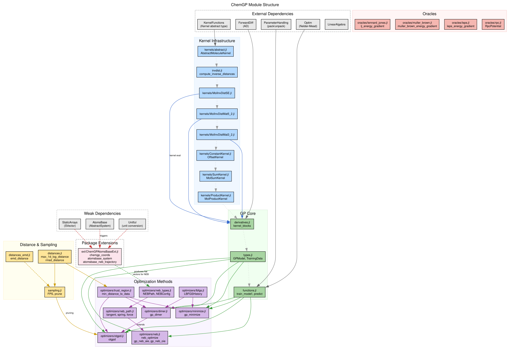

ChemGP.jl
Gaussian Process-guided molecular geometry optimization in Julia.
ChemGP is a pedagogical Julia package implementing GP-guided optimization methods for molecular systems, companion to an ACS Au tutorial on gpr_optim. It demonstrates how Gaussian process regression with derivative observations can dramatically reduce the number of expensive quantum chemistry evaluations needed to find minimum energy structures and transition states.
Key Features
- GP regression with derivative observations: Each oracle call provides both energy and gradient, giving
1 + Dobservations per evaluation - Rotation-invariant molecular kernels: Squared Exponential and Matern 5/2 kernels operating on inverse interatomic distance features
- GP-guided minimization: Surrogate-based geometry optimization with trust regions
- GP-Dimer saddle point search: Find transition states using the dimer method accelerated by GP predictions (Goswami et al. 2025)
- OTGPD: Production GP-dimer with FPS subset selection, hyperparameter oscillation detection (HOD), variance barrier, EMD trust regions, and adaptive trust threshold (Goswami & Jonsson 2025)
- GP-NEB (AIE/OIE): GP-accelerated nudged elastic band for minimum energy paths, with warm-started hyperparameters and parallel oracle evaluation (Goswami, Gunde & Jonsson 2026)
- Random Fourier Features (RFF): Scalable GP approximation for MolInvDistSE, reducing prediction cost from O(N^3) to O(D_rff^3) via Bayesian linear regression
- Remote potential integration: Connect to external potential servers via rgpot RPC
- Kernel composition: Combine molecular kernels with constant offsets via
MolSumKernel - AtomsBase integration: Load structures from extxyz/POSCAR/CIF via optional package extension
Quick Example
using ChemGP
# Create a Lennard-Jones oracle and random starting cluster
x_init = random_cluster(4)
kernel = MolInvDistSE(1.0, [0.5], Float64[])
# Run GP-guided minimization
result = gp_minimize(lj_energy_gradient, x_init, kernel)
println("Converged: ", result.converged)
println("Final energy: ", result.E_final)
println("Oracle calls: ", result.oracle_calls)Architecture Overview

Contents
- Installation
- Quick Start
- GP Basics: Derivative Observations
- Molecular Kernels
- GP-Guided Minimization
- GP-Dimer Saddle Point Search
- OTGPD – Optimal Transport GP Dimer
- From Basic GP-Dimer to OTGPD
- Adaptive GP Convergence Threshold
- Initial Rotation Phase
- FPS Subset Selection for Hyperparameter Optimization
- Hyperparameter Oscillation Detection (HOD)
- Variance Barrier
- Trust Region Metrics
- Adaptive Trust Threshold
- Molecular Kernel Path
- Example: Muller-Brown Saddle Point
- Example: Molecular System with Full Feature Set
- Configuration
- Data Pruning
- Convergence History
- Further Reading
- Next Steps
- Nudged Elastic Band (NEB)
- RPC Integration
- Kernel Design
- Algorithm Pseudocode
- Trust Regions
- Codebase Comparison
- References
- GP-Guided Optimization
- GP-Dimer Method
- Dimer Method
- Gaussian Process Regression
- Inverse Distance Features
- Enhanced Climbing Image NEB
- Distance Metrics, Pruning, and Trust Regions
- Optimal Transport and Earth Mover's Distance
- Farthest Point Sampling and Subset Selection
- RPC and Interoperable Potentials
- Benchmarking and Performance Metrics
- Molecular Simulation and Analysis
- Software Design and Scientific Computing
- Open Science